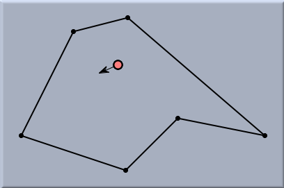
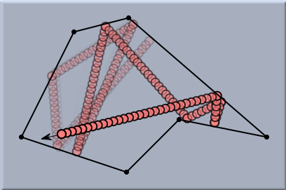
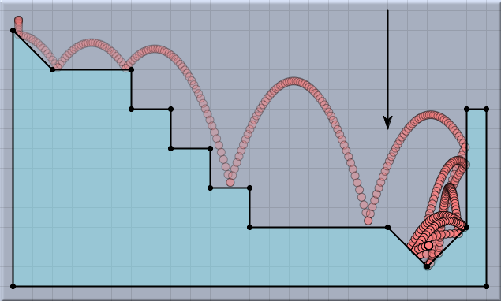
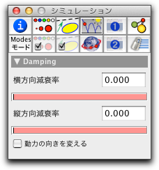

反射壁

 |  |
||
| 多角形領域での質点:スタート | 質点の軌跡 |
反射壁は、ビリヤードや卓球のように、 CindyLab で作成する物理的な面白いゲームにとって不可欠です。次の図は、反射壁と 重力を組み合わせた簡単な例です。
 |
| 階段の上のボール |
反射壁インスペクタ
反射壁インスペクタは床の場合とほとんど同じです。
 |
| 反射壁インスペクタ |
これに加えて、反射壁は 動力の向きを変えるチェックボックスを持っています。もしこのチェックボックスがチェックされていると、粒子が反射壁に衝突したときに内部のバネ駆動装置のアニメーションの方向が反転します。この駆動装置の詳細については、バネ と 環境をご覧ください。この振舞いは、壁に当たると方向を変える、歩行エンジンの構築に大変有用です。
反射壁と CindyScript
CindyLabの他の要素と同じく、反射壁にも CindyScript によって読み書きのできるいくつかのフィールドがあります。
- xdamp: X方向の減衰率(実数, 読み書き可)
- ydamp: Y方向の減衰率(実数, 読み書き可)
- simulate: 反射壁によるシミュレーションのON/OFF (ブール値, 読み書き可)
Page last modified on Tuesday 13 of March, 2012 [13:47:44 UTC].
The original document is available at
http://doc.cinderella.de/tiki-index.php?page=BouncerJ